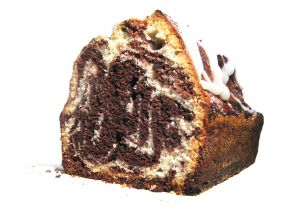
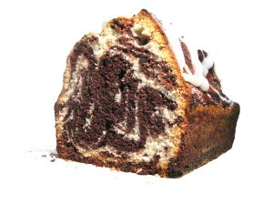

Back in the 1890's, the Jenkins family had a history of hunting wild pigs and hogs and they would smoked them until the meat would fall from the bones. Pa Stab Jenkins and his sons would start at the crack of dawn, hunting and trapping hogs, deer and even wild game birds. They also raised their own cattle and chicken. Ma Jenkins would add her special secret sauces the to finished meat and people would come from miles around to grab their taste of the Jenkins down home finger licking goodness of pork, beef or venison. Thus, creating a family tradition of home cooked barbecue.
As the generations went on, it was a tradition for each member to contribute to the family reputation of good southern cooking. Everything from cooking Sunday dinners for the local churches, bakes sales, venturing into fishing and shrimping, it was a honor to add to the family name.
Little Rollo Jenkins vision as to send the next generations to college for a better live. But as many graduated, they returned to take the Jenkins' family name into the next century. In 1980, Pa Stab's great-grand son, Luther, opened the first restaurant in Timbuktu, Mississippi. It was an early success. Later, with the help of Luther's son, Baby Lu, they opened 10 restaurants over the Deep South.
Now Stab's Rib Stack, LLC has expanded to 15 restaurants, 5 The Scrumchous Scrimp brand restaurants, 20 mobile food trucks and Fast Stab's internet ordering service in the cities of Metropolis and Gotham.
People are still travel far abroad to grab themselves a taste of Stab's Rib Combo's or Sweet and Spicy Chicken Sandwich with Ma Jenkins's Secret Sweet and Spicy Sauce. They have won several local and state cook-offs and many celebrities swear by it, that southern smoked BBQ taste. One famous singer travel through was quoted saying Slab's rib's and sauce is sooo delicious, it makes want to chew your finger off.


 
